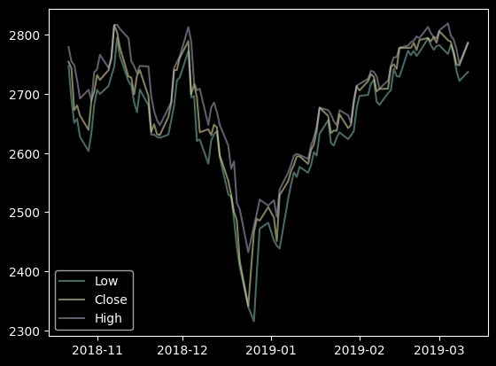
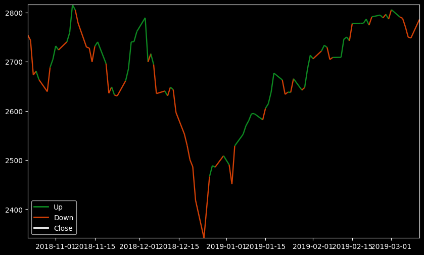
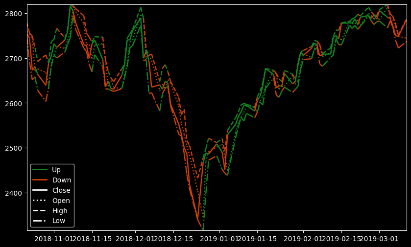
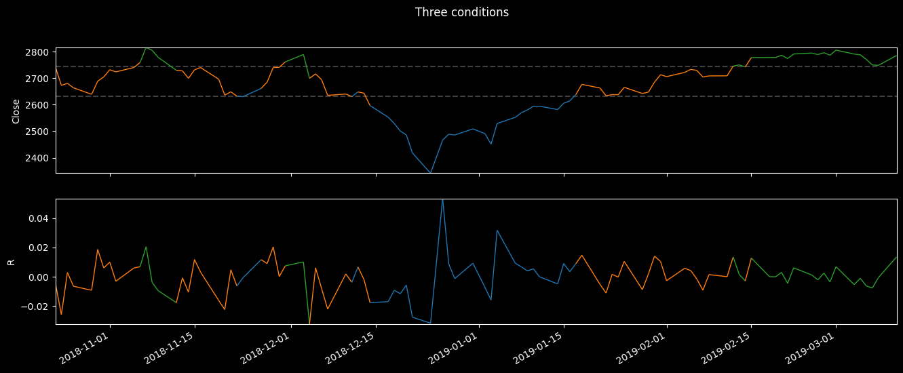
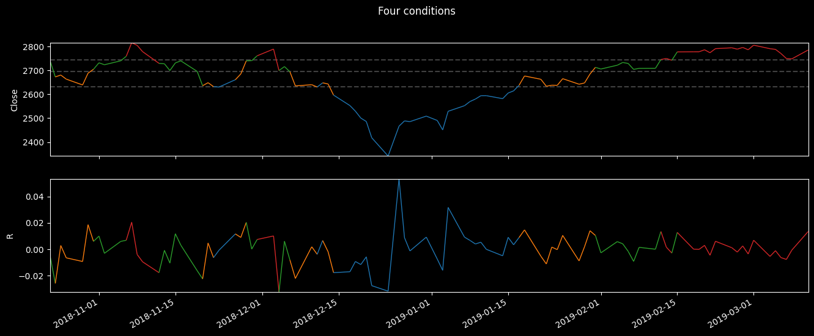

df = load_test_df()
plot_timeseries(df.Low, df.Close, df.High, add_legend=True)
Call self as a function.
def plot_two_color_line(
s:Series, # Data to plot as a pd.Series with DateTimeIndex
cond:pandas.Series | numpy.ndarray, # boolean condition defining the colors to apply (same length as s)
cond_labels:tuple=('Up', 'Down'), # labels for the condition to be used in the legend
ax:matplotlib.axes._axes.Axes | None=None, # ax where to plot; if None, a new figure and ax will be created and shown
linestyle:str='-', # '-' or 'solid'; '--' or 'dashed'; ':' or 'dotted'; '-.' or 'dashdot'
figsize:tuple=(10, 6), colors:tuple=('#0D8821', '#D13F05')
):Call self as a function.

It is also possible to add a conditional line to an existing axes
df = load_test_df()
df['R'] = df.Close.pct_change()
cond = df['R'] > 0
fig, ax = plt.subplots(figsize=(10, 6))
plot_two_color_line(df['Close'], cond, ax=ax)
plot_two_color_line(df['Open'], cond, ax=ax, linestyle=':')
plot_two_color_line(df['High'], cond, ax=ax, linestyle='--')
plot_two_color_line(df['Low'], cond, ax=ax, linestyle='-.')
plt.show()
Call self as a function.
We can color the line according to any mutually excluding condition passed in the cond_list (list of boolean masks)
| Open | High | Low | Close | Volume | R | |
|---|---|---|---|---|---|---|
| count | 98.000000 | 98.000000 | 98.000000 | 98.000000 | 98.000000 | 98.000000 |
| mean | 2672.851633 | 2695.045714 | 2648.687041 | 2673.703061 | 26533.061224 | 0.000191 |
| std | 99.568815 | 92.390865 | 105.585380 | 99.665406 | 14201.804964 | 0.012402 |
| min | 2345.730000 | 2432.140000 | 2315.480000 | 2341.530000 | 7104.000000 | -0.032240 |
| 25% | 2631.902500 | 2647.597500 | 2605.647500 | 2632.462500 | 16089.750000 | -0.006064 |
| 50% | 2694.520000 | 2715.430000 | 2663.535000 | 2695.205000 | 21515.500000 | 0.000142 |
| 75% | 2744.212500 | 2762.150000 | 2723.555000 | 2745.025000 | 34185.500000 | 0.006873 |
| max | 2814.760000 | 2819.210000 | 2794.680000 | 2815.880000 | 64521.000000 | 0.053474 |
Set three conditions based on percentiles
((98, 6), (98,), array([False, True]))Plot two columns using the three conditions

Same but with four conditions
cond_0 = df['Close'] < p25
cond_1 = (p25 <= df['Close']) & (df['Close'] < p50)
cond_2 = (p50 <= df['Close']) & (df['Close'] < p75)
cond_3 = df['Close'] >= p75
cond_list = [cond_0, cond_1, cond_2, cond_3]
fig,axs = plt.subplots(2, 1, figsize=(16,6))
axs[0].hlines([p25, p50, p75], df.index.min(), df.index.max(), colors='gray', linestyles='dashed', alpha=0.5)
plot_multi_color_line(axs[0], df.Close, cond_list)
plot_multi_color_line(axs[1], df.R, cond_list)
fig.suptitle("Four conditions")
plt.show()
Call self as a function.
Call self as a function.
Call self as a function.